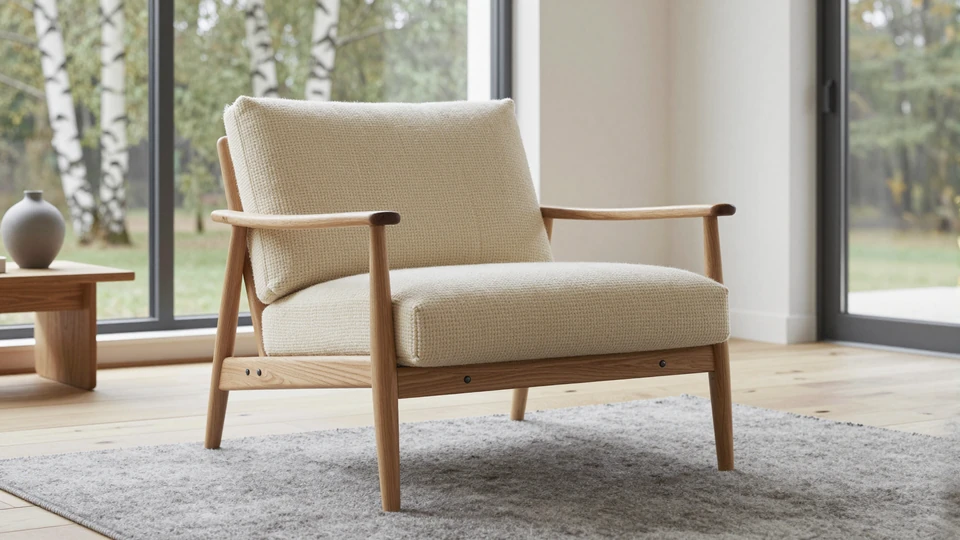
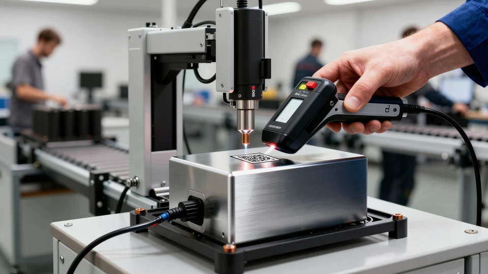
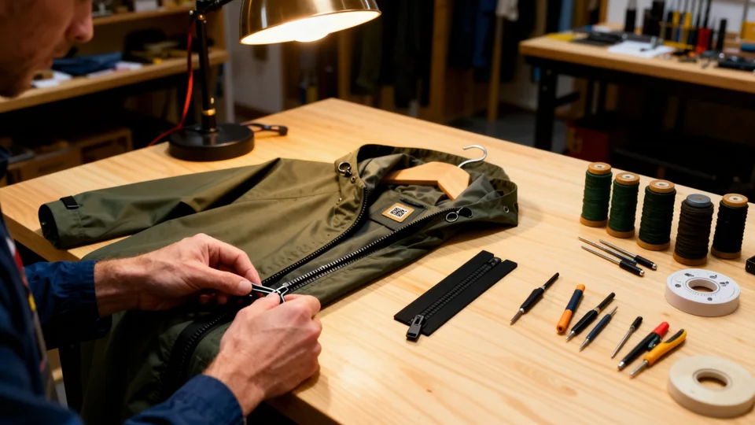

Every asset and question, one entry each — generated 2026-10-01 12:51 UTC by node tools/catalogue.mjs. Click an ID to copy it; notes come from docs/journey/notes.json.
Desktop framing for the whole branch: 0% 60%; phones use each stop's own focus.
01 · Company

Alt
A Danish oak lounge chair by tall windows in a bright Nordic living room
Framing
focus 45% 60%, panel right
Made
v4: the still is the motion base's own end frame (tools/rig.py), composited from the same layers the clip moves - lounge master photo, the chair's real parts cut from it (SAM 2.1 + BiRefNet), plates made with Z-Image-Turbo / Qwen-Image-Edit, the oak macro and the prduct.com QR burn
97 frames · 24 fps · 4.042 s · question cue at 80%
Made
v4: 2.5D layer animation (real object and camera motion: parts float apart, the leg frame glides, turns, travels and lands, the chair flies; laser raster reveal) rendered by LTX-2.5 video-to-video at denoise 0.975 with BOTH end stills as guides (frame 0 and the last frame)
Move
T1 · seed 101 · work/v4/clips/T1.mp4
Prompt
A slow, smooth camera pan to the right across a bright, calm Scandinavian living room: a low oak lounge armchair with cream basket-weave wool cushions on a pale grey rug by tall black-framed windows; outside, white birch trunks and autumn leaves sway gently in a light breeze; soft overcast daylight. Photorealistic, premium Nordic product cinematography, real optical depth of field, natural motion blur, steady and smooth, one continuous shot, no cuts, no text.
The oak lounge chair with cream basket-weave cushions
Framing
focus 30% 60%, panel right
Made
v4: the still is the motion base's own end frame (tools/rig.py), composited from the same layers the clip moves - lounge master photo, the chair's real parts cut from it (SAM 2.1 + BiRefNet), plates made with Z-Image-Turbo / Qwen-Image-Edit, the oak macro and the prduct.com QR burn
97 frames · 24 fps · 4.042 s · question cue at 80%
Made
v4: 2.5D layer animation (real object and camera motion: parts float apart, the leg frame glides, turns, travels and lands, the chair flies; laser raster reveal) rendered by LTX-2.5 video-to-video at denoise 0.975 with BOTH end stills as guides (frame 0 and the last frame)
Move
T2 · seed 202 · work/v4/clips/T2.mp4
Prompt
The camera glides smoothly toward the oak lounge armchair and pushes in close to the flat oak side rail below its seat, until the fine straight grain of the oak fills the whole frame: grain lines, silvery ray flecks and pores coming into sharp focus. One continuous, steady camera move, macro lens at the end. Photorealistic, premium Nordic product cinematography, real optical depth of field, natural motion blur, steady and smooth, one continuous shot, no cuts, no text.
The oak of the chair's side rail, close up: straight grain and silver ray flecks
Framing
focus 50% 50%, panel right
Made
v4: the still is the motion base's own end frame (tools/rig.py), composited from the same layers the clip moves - lounge master photo, the chair's real parts cut from it (SAM 2.1 + BiRefNet), plates made with Z-Image-Turbo / Qwen-Image-Edit, the oak macro and the prduct.com QR burn
97 frames · 24 fps · 4.042 s · question cue at 80%
Made
v4: 2.5D layer animation (real object and camera motion: parts float apart, the leg frame glides, turns, travels and lands, the chair flies; laser raster reveal) rendered by LTX-2.5 video-to-video at denoise 0.975 with BOTH end stills as guides (frame 0 and the last frame)
Move
T3 · seed 303 · work/v4/clips/T3_b.mp4
Prompt
Starting on an extreme macro of oak grain, the camera pulls smoothly back to reveal the oak lounge armchair in a bright living room; then the chair gently comes apart in mid-air: the two oak side frames drift outward, the cushions lift up together, the front and back rails drop a little, and graphite bolts slide out of their holes, until every part floats weightlessly, spaced apart like a real exploded view. Photorealistic, premium Nordic product cinematography, real optical depth of field, nat…
The lounge chair opened up: cushions off, black webbing and foam showing, a tray of bolts and nuts on the rug
Framing
focus 30% 55%, panel right
Made
v4: the still is the motion base's own end frame (tools/rig.py), composited from the same layers the clip moves - lounge master photo, the chair's real parts cut from it (SAM 2.1 + BiRefNet), plates made with Z-Image-Turbo / Qwen-Image-Edit, the oak macro and the prduct.com QR burn
ok v5 (2026-09-30): the real chair from stop 2 opened up (Qwen edit, two passes): cushions off, back and seat webbing, foam in the unzipped cushion, a tray of fittings. The stop-3 oak macro pulls straight back onto the same side rail (FUR-M03).
Component → Supplier
Timing
49 frames · 24 fps · 2.042 s · question cue at 80%
Made
v4: 2.5D layer animation (real object and camera motion: parts float apart, the leg frame glides, turns, travels and lands, the chair flies; laser raster reveal) rendered by LTX-2.5 video-to-video at denoise 0.975 with BOTH end stills as guides (frame 0 and the last frame)
Move
T4 · seed 404 · work/v4/clips/T4_b.mp4
Prompt
The parts of a disassembled oak lounge chair float in mid-air in a bright living room. One oak side frame - front leg, rear leg, back stile, armrest and side rail in one piece - glides smoothly toward the camera and turns slightly, while the other parts drift back and fall softly out of focus behind it. Rack focus onto the oak frame. Photorealistic, premium Nordic product cinematography, real optical depth of field, natural motion blur, steady and smooth, one continuous shot, no cuts, no text.
Felled oak logs piled beside a misty forest road, small tags on their cut ends
Framing
focus 35% 60%, panel right
Made
v4: the still is the motion base's own end frame (tools/rig.py), composited from the same layers the clip moves - lounge master photo, the chair's real parts cut from it (SAM 2.1 + BiRefNet), plates made with Z-Image-Turbo / Qwen-Image-Edit, the oak macro and the prduct.com QR burn
ok v5: felled oak logs beside a misty forest road (Z-Image-Turbo), tags on the cut ends. Reached by a whip pan from the lounge (FUR-M04).
Supplier → Logistics
Timing
97 frames · 24 fps · 4.042 s · question cue at 80%
Made
v4: 2.5D layer animation (real object and camera motion: parts float apart, the leg frame glides, turns, travels and lands, the chair flies; laser raster reveal) rendered by LTX-2.5 video-to-video at denoise 0.975 with BOTH end stills as guides (frame 0 and the last frame)
Move
T5 · seed 505 · work/v4/clips/T5_b.mp4
Prompt
An oak chair side frame floats in mid-air in the foreground, sharp, while the camera travels with it: behind it the bright living room whips away sideways in a streak of motion blur and a bright furniture component factory hall slides in, softly out of focus, with a work table, a marking machine and pallets of wrapped chairs. The frame drifts and turns slightly as it travels. Photorealistic, premium Nordic product cinematography, real optical depth of field, natural motion blur, steady and smoo…
Strapped bundles of oak boards on pallets in the factory's loading bay, a truck and a forklift behind
Framing
focus 40% 60%, panel right
Made
v4: the still is the motion base's own end frame (tools/rig.py), composited from the same layers the clip moves - lounge master photo, the chair's real parts cut from it (SAM 2.1 + BiRefNet), plates made with Z-Image-Turbo / Qwen-Image-Edit, the oak macro and the prduct.com QR burn
check v5: bundles of oak boards in the loading bay (Z-Image-Turbo). The bundle ends are a slightly busy mosaic; the truck stands inside the hall.
Logistics → Factory
Timing
49 frames · 24 fps · 2.042 s · question cue at 80%
Made
v4: 2.5D layer animation (real object and camera motion: parts float apart, the leg frame glides, turns, travels and lands, the chair flies; laser raster reveal) rendered by LTX-2.5 video-to-video at denoise 0.975 with BOTH end stills as guides (frame 0 and the last frame)
Move
T6 · seed 606 · work/v4/clips/T6.mp4
Prompt
An oak chair side frame floats in a bright factory hall, then turns and glides down to lie flat on a pale beech work table under the head of a compact laser marking machine; the focus racks from the floating frame to the sharp station. Gentle, weightless landing, soft contact shadow. Photorealistic, premium Nordic product cinematography, real optical depth of field, natural motion blur, steady and smooth, one continuous shot, no cuts, no text.
A flatbed laser engraver in the chair factory, oak rails on its bed under the laser head
Framing
focus 62% 55%, panel left
Made
v4: the still is the motion base's own end frame (tools/rig.py), composited from the same layers the clip moves - lounge master photo, the chair's real parts cut from it (SAM 2.1 + BiRefNet), plates made with Z-Image-Turbo / Qwen-Image-Edit, the oak macro and the prduct.com QR burn
ok v5: a flatbed laser engraver with oak rails on its bed (Z-Image-Turbo); the push into the rail burns the real QR in (FUR-M07).
Factory → Data
Timing
97 frames · 24 fps · 4.042 s · question cue at 80%
Made
v4: 2.5D layer animation (real object and camera motion: parts float apart, the leg frame glides, turns, travels and lands, the chair flies; laser raster reveal) rendered by LTX-2.5 video-to-video at denoise 0.975 with BOTH end stills as guides (frame 0 and the last frame)
Move
T7 · seed 707 · work/v4/clips/T7.mp4
Prompt
The camera pushes smoothly down onto the oak chair frame lying under the laser marking head, into the grain of its side rail; the tiny bright point of the laser races across the oak, row by row, burning a dark square code into the grain with a faint glow and a wisp of smoke, until the freshly etched code and the oak grain fill the frame. Photorealistic, premium Nordic product cinematography, real optical depth of field, natural motion blur, steady and smooth, one continuous shot, no cuts, no te…
v4: the still is the motion base's own end frame (tools/rig.py), composited from the same layers the clip moves - lounge master photo, the chair's real parts cut from it (SAM 2.1 + BiRefNet), plates made with Z-Image-Turbo / Qwen-Image-Edit, the oak macro and the prduct.com QR burn
97 frames · 24 fps · 4.042 s · question cue at 80%
Made
v4: 2.5D layer animation (real object and camera motion: parts float apart, the leg frame glides, turns, travels and lands, the chair flies; laser raster reveal) rendered by LTX-2.5 video-to-video at denoise 0.975 with BOTH end stills as guides (frame 0 and the last frame)
Move
T8 · seed 808 · work/v4/clips/T8.mp4
Prompt
Starting on an extreme macro of a square code laser-etched into oak grain, the camera pulls smoothly back and turns to reveal that the code is on the oak side rail of a lounge armchair with cream cushions in a bright Scandinavian living room; a person's hand holding a dark smartphone moves in from the right and holds the phone up toward the chair, its screen showing the camera view. Photorealistic, premium Nordic product cinematography, real optical depth of field, natural motion blur, steady a…
A phone scans the QR code on the chair's oak side rail
Framing
focus 30% 60%, panel right, overlay 16.4% / 69.1%
Made
v4: the still is the motion base's own end frame (tools/rig.py), composited from the same layers the clip moves - lounge master photo, the chair's real parts cut from it (SAM 2.1 + BiRefNet), plates made with Z-Image-Turbo / Qwen-Image-Edit, the oak macro and the prduct.com QR burn
refine On 16:10 screens the scanning hand sits partly behind the question panel (fully visible on 16:9).
Passport → Next life
Timing
97 frames · 24 fps · 4.042 s · question cue at 80%
Made
v4: 2.5D layer animation (real object and camera motion: parts float apart, the leg frame glides, turns, travels and lands, the chair flies; laser raster reveal) rendered by LTX-2.5 video-to-video at denoise 0.975 with BOTH end stills as guides (frame 0 and the last frame)
Move
T9 · seed 909 · work/v4/clips/T9_c.mp4
Prompt
The hand with the phone withdraws; the oak lounge armchair lifts gently off the grey rug and floats in the air, then the camera whips fast to the right, following the floating chair through a streak of motion blur into a bright furniture repair workshop, where the chair glides down and settles softly on a long oak workbench next to a craftsperson in a canvas apron. Photorealistic, premium Nordic product cinematography, real optical depth of field, natural motion blur, steady and smooth, one con…
The chair on the bench of a repair and upholstery workshop
Framing
focus 45% 55%, panel left
Made
v4: the still is the motion base's own end frame (tools/rig.py), composited from the same layers the clip moves - lounge master photo, the chair's real parts cut from it (SAM 2.1 + BiRefNet), plates made with Z-Image-Turbo / Qwen-Image-Edit, the oak macro and the prduct.com QR burn
The battery opened on a service bench: cells and BMS
Framing
focus 45% 55%, panel right
Made
Qwen-Image-Edit-2511 with reference images
Prompt
The same graphite battery pack opened on an ESD-safe grey service bench: the housing halves are separated and laid side by side, inside are neat rows of cylindrical lithium-ion cells in black plastic cell holders joined by bright nickel strips, a green battery-management circuit board with fine wiring and a connector at one end. A technician's blue-gloved hand rests at the edge. Clean workshop light, top-down three-quarter view. Believable service context, no sci-fi. Photorealistic technical ph…
Inside a clean modern battery cell manufacturing plant in Europe: long trays of identical cylindrical lithium-ion cells moving on a stainless conveyor in the foreground, formation and testing racks with small status lights receding into the background, technicians in grey workwear softly out of focus, cool daylight from high windows mixed with soft LED light, orderly, precise, traceable. Camera at bench height, 35mm lens. Premium Nordic product cinematography, photorealistic, ARRI Alexa 35 look…
Certified shipping boxes on a pallet in a dispatch area
Framing
focus 45% 55%, panel right
Made
Qwen-Image-Edit-2511 with reference images
Prompt
In the same battery plant, the camera has moved to the controlled dispatch area: plain grey sealed shipping boxes for lithium-ion cells stacked on a wooden pallet and neatly stretch-wrapped, each box with one small plain white diamond-shaped label that is completely blank, a graphite pallet truck beside it, a simple painted yellow safety outline on the clean floor. Absolutely no text, letters, numbers, symbols, signs or floor lettering anywhere. The conveyor from before is softly visible behind…
Inside a modern European e-bike battery pack assembly line: in the foreground an automated spot-welding station joining bright nickel strips onto a module of cylindrical cells in a black holder, graphite-black battery housings waiting on a conveyor, operators in grey workwear softly out of focus, clean white and grey hall, soft daylight and LED light. Camera at bench height, 35mm lens. Premium Nordic product cinematography, photorealistic, ARRI Alexa 35 look, subtle Cooke lens character, soft n…
refine Large black cylindrical cells under the laser head do not match the pack's cells in BAT-S04.
Factory → Data
Timing
97 frames · 24 fps · 4.042 s · question cue at 80%
Made
v4 data stop: 2.5D layer move (push into / pull back from the product's own surface; battery: the laser raster burns the code in) rendered by LTX-2.5 video-to-video at denoise 0.975 with both end stills as guides
Move
B7 · seed 1707 · work/v4/clips/B7.mp4
Prompt
The camera pushes smoothly down toward the block of black battery cells under the laser head and into the matte black surface of a cell; the tiny bright point of the laser races across it row by row and marks a light grey square code into the black surface, until the freshly marked code fills the frame. Photorealistic, premium Nordic product cinematography, real optical depth of field, natural motion blur, steady and smooth, one continuous shot, no cuts, no text.
check The laser raster reads mostly as a focus pull onto the code.
08 · Data

Alt
The prduct.com QR code laser-marked into the battery pack's black casing
Framing
focus 60% 50%, panel left, overlay 79.2% / 50%
Made
v4 data macro: Z-Image-Turbo surface texture (matte black pack polymer) with the real HTTPS://PRDUCT.COM QR (tools/data_v4b.py)
Prompt
In the same battery assembly hall, the camera has moved to the end-of-line test station: a finished graphite-black battery pack, identical to the one on the e-bike, lies on the test bench connected to a diagnostic cable; a worker's hand holds a handheld scanner over a small laser-etched square data matrix code on the aluminium housing. There are no monitors, screens or displays anywhere in the frame, only machines, cables and the blurred assembly line behind. Focus on the code and the scanner. …
ok Remade 2026-09-28: macro of the pack's own black casing with the laser-marked prduct.com QR (light on dark; decodes).
Data → Passport
Timing
97 frames · 24 fps · 4.042 s · question cue at 80%
Made
v4 data stop: 2.5D layer move (push into / pull back from the product's own surface; battery: the laser raster burns the code in) rendered by LTX-2.5 video-to-video at denoise 0.975 with both end stills as guides
Move
B8 · seed 1808 · work/v4/clips/B8.mp4
Prompt
Starting on an extreme macro of a light grey square code laser-marked into matte black plastic, the camera pulls smoothly back and turns to reveal that the code is on the black battery pack of an e-bike on a workstand in a bright workshop; a hand holds a dark smartphone up toward the code. Photorealistic, premium Nordic product cinematography, real optical depth of field, natural motion blur, steady and smooth, one continuous shot, no cuts, no text.
A mechanic's phone at the QR code marked on the bike's battery
Framing
focus 50% 50%, panel left, overlay 54.8% / 36.6%
Made
Qwen-Image-Edit-2511 with reference images
Prompt
The same e-bike in a bright, calm bicycle service workshop, clamped in a repair stand. A mechanic's hand holds a dark smartphone close to a small laser-etched square code on the graphite battery housing on the down tube; the phone screen is dark. Tools hang on a pegboard wall behind, soft daylight, shallow depth of field with focus on the battery and the phone. Not a commercial, a real working moment. Photorealistic editorial photograph, 50mm lens.
The removed battery on a state-of-health tester, modules sorted for reuse
Framing
focus 45% 55%, panel right
Made
Qwen-Image-Edit-2511 with reference images
Prompt
In the same service workshop, the battery has been removed from the e-bike: the graphite battery pack lies on the workbench connected by a cable to a compact state-of-health tester, and beside it an opened older pack shows its cell modules carefully sorted into two plain grey crates, one for second-life reuse and one for recycling, without any text. The e-bike stands softly out of focus in the background. Calm industrial daylight. Photorealistic editorial photograph, 35mm lens.
Zip, seam tape, studs and lining of the opened jacket
Framing
focus 45% 55%, panel right
Made
Qwen-Image-Edit-2511 with reference images
Prompt
Close-up of the front opening of this same rain jacket laid on a pale oak table with one front panel folded back: the matte black zipper teeth, the placket with matte black press studs, the narrow heat-sealed seam tape on the inside of the seams, the mesh lining, a small drawcord toggle — the multi-layer construction clearly readable. No labels, no tags, no printed text anywhere. Soft daylight from the left, shallow depth of field. Photorealistic product detail photograph, 50mm lens.
A roll of the same fabric in a technical textile mill
Framing
focus 40% 55%, panel right
Made
Z-Image-Turbo text-to-image
Prompt
Inside a clean modern European technical textile mill: in the foreground a large roll of dark moss-green coated waterproof fabric on an inspection frame, the fabric running smoothly over polished rollers towards the camera, a coating line and more fabric rolls softly out of focus in the background, high windows with soft daylight, orderly and precise. Camera at chest height, 35mm lens. Premium Nordic product cinematography, photorealistic, ARRI Alexa 35 look, subtle Cooke lens character, soft n…
In the same textile mill, the camera has moved to the dispatch area: finished rolls of the same dark moss-green fabric wrapped in clear film are stacked on wooden pallets, one pallet on a pallet truck heading to an open loading door with soft daylight, orderly and clean. Same light. Photorealistic industrial photograph, 35mm lens.
Inside a bright modern European garment workshop: in the foreground an automated cutting table cutting jacket panels from dark moss-green coated waterproof fabric, cut panels neatly stacked, behind it a seam-sealing machine applying tape to a seam and a sewing station, soft daylight from tall windows, skilled operators softly out of focus, calm and precise. Camera at chest height, 35mm lens. Premium Nordic product cinematography, photorealistic, ARRI Alexa 35 look, subtle Cooke lens character, …
refine The factory jacket (short, flap pockets, zips) differs from the product coat.
Factory → Data
Timing
97 frames · 24 fps · 4.042 s · question cue at 80%
Made
v4 data stop: 2.5D layer move (push into / pull back from the product's own surface; battery: the laser raster burns the code in) rendered by LTX-2.5 video-to-video at denoise 0.975 with both end stills as guides
Move
X7 · seed 2707 · work/v4/clips/X7_b.mp4
Prompt
The camera pushes smoothly down toward the green rain jacket lying on the cutting table and into its white care label inside the collar, until the woven label with its printed square code fills the frame. One continuous camera move. Photorealistic, premium Nordic product cinematography, real optical depth of field, natural motion blur, steady and smooth, one continuous shot, no cuts, no text.
The prduct.com QR code printed on the jacket's woven care label
Framing
focus 60% 50%, panel left, overlay 79.2% / 50%
Made
v4 data macro: Z-Image-Turbo surface texture (woven care label) with the real HTTPS://PRDUCT.COM QR (tools/data_v4b.py)
Prompt
In the same garment workshop, the camera has moved to the final inspection table: the finished dark moss-green rain jacket, identical to the hanging one, lies flat with its inside neck visible; a small woven care label with a tiny square code is sewn inside, and a worker's hand holds a handheld scanner over it. No readable text anywhere. Focus on the label and the scanner. Photorealistic industrial photograph, 50mm lens.
ok Remade 2026-09-28: macro of the woven care label with the printed prduct.com QR, sewn in the collar.
Data → Passport
Timing
97 frames · 24 fps · 4.042 s · question cue at 80%
Made
v4 data stop: 2.5D layer move (push into / pull back from the product's own surface; battery: the laser raster burns the code in) rendered by LTX-2.5 video-to-video at denoise 0.975 with both end stills as guides
Move
X8 · seed 2808 · work/v4/clips/X8_b.mp4
Prompt
Starting on an extreme macro of a square code printed on a white woven care label, the camera pulls smoothly back to reveal the label inside the collar of a green rain jacket on a hanger in a bright room, while a hand holds a dark smartphone up toward it. Photorealistic, premium Nordic product cinematography, real optical depth of field, natural motion blur, steady and smooth, one continuous shot, no cuts, no text.
A customer's phone at the QR code on the jacket's collar label
Framing
focus 50% 45%, panel left, overlay 50.8% / 48.9%
Made
Qwen-Image-Edit-2511 with reference images
Prompt
The same rain jacket hanging on a slim steel rail in a minimalist Copenhagen store with pale plaster walls and oak floor. A customer's hand holding a dark smartphone approaches the small woven label with a tiny square code at the inside of the collar; the phone screen is dark. Soft daylight, shallow depth of field, focus on the collar and the phone. Photorealistic editorial photograph, 50mm lens.
refine Ends on TEX-S10's old tan label — fix together with TEX-S10.
10 · Next life

Alt
A technician replaces the jacket's zip at a repair bench
Framing
focus 45% 55%, panel right
Made
Qwen-Image-Edit-2511 with reference images
Prompt
The repair corner at the back of the same Copenhagen store: the same dark moss-green rain jacket lies on a pale oak workbench under a warm lamp, a repair technician's hands replace its zipper with a new matte black zipper, the old zipper set aside, spools of matching thread, seam tape and small tools neatly organised. Repair, resale and longevity made tangible. Photorealistic editorial photograph, 35mm lens.
furniture In a model name — fabric and finish are sorted out per order battery In a model name — capacity and firmware versions blur together textile In a style name — colours and sizes are handled as they come
1
A model name, variants handled informally
variant-blind
furniture In a model with variants we can list battery In a model with variants we can list textile In a style with colours and sizes we can list
2
A model with listed variants
—
furniture Every fabric and finish variant has its own record battery Every variant has its own part number and spec textile Every colour–size variant has its own SKU record
4 · battery 2
A record per variant
—
furniture Every single chair carries its own serial identity battery Every pack has a serial number linked to its build textile Every garment can be identified individually
— it depends · battery 4
Item-level identity — Earns its cost in the contract channel — a revenue case, not a compliance one.
—
furniture only
Each piece is made to order — no two are quite alike
— it depends
Made to order — A business model, not a maturity level.
made-to-order
battery only
It depends on the product line
— it depends
Varies by product line
varies
Material · desk
Prompt (furniture only) Your ten biggest suppliers by spend. You ask each one for what they already owe or routinely hold on their last delivery, due in a week.
Detail (furniture only) A substances statement, the fibre composition, the panel’s formaldehyde class, the FSC or PEFC claim on the invoice. Not a full material declaration — furniture suppliers do not owe one. Count the ones you would actually get it from.
Asked when Furniture: the purchasing desk's version of the material stop. “A material is only as known as the paperwork that comes with it.”
Shown on FUR-S03 · end pane context (shown, never scored) · scores — (after the weight table: Supplier data quality, Verification / trust)
Option
Answer
S
Records
Flags
Eight or more. For them it is routine.
—
Eight or more of the ten, as routine
—
Five to seven. The fabric mills and the fittings supplier, yes; the frame and foam suppliers would need longer.
—
Five to seven of the ten
—
Two to four, the ones we already ask regularly.
—
Two to four of the ten
—
None within a week. A month with chasing for most.
—
None within a week
—
We have not asked in that form. Certificates and test reports when needed, yes.
—
Never asked in that form
—
Material · desk
Prompt (furniture only) A specifier wants the chair’s composition and certificates in writing. What do you actually send?
Detail (furniture only) Not what you would like to send. What went out last time.
Asked when Furniture: the sales desk's version of the material stop. “What it is made of, as it reaches your customers.”
Shown on FUR-S03 · end pane L:answers-customer · scores — (after the weight table: DPP data availability, Verification / trust, Sales enablement)
Option
Answer
S
Records
Flags
A datasheet we maintain, with dated certificates attached and a version number on it
4
What goes out is a datasheet you maintain, with dated certificates and a version number.
—
Our own datasheet, then the certificates once someone finds them
3
What goes out is your own datasheet, then the certificates once someone finds them.
—
The supplier’s PDF, forwarded as it came
2
What goes out is the supplier’s PDF, forwarded as it came.
—
An email from memory, or a phone call to someone in product
1
What goes out is an email from memory, or a call to someone in product.
—
It differs every time; whatever we can find that week
0
What a customer gets depends on who they ask.
—
We are not asked in writing
— doesn't apply
Customers do not ask in writing.
—
Material · base
furniture Up close, a chair is a recipe. How well do you know yours?
battery Up close, a battery is chemistry. How well do you know yours?
textile Up close, a jacket is fibres and coatings. How well do you know yours?
furniture Wool blend, oak, foam, glue, lacquer — down to the substances in them.
battery Cell chemistry, aluminium housing, seals, thermal pads — and the critical raw materials inside.
textile Polyester base, PU coating, water-repellent finish — and what is in them.
Specified per material, with grades and percentages
3
Material specifications with grades
—
Specified per material, with substances of concern declared by the supplier
4
Specified per material, substances of concern declared
—
Third-party tested, for the products that carry a label
— it depends
Third-party tested where a label requires it — The ESPR asks for name or CAS, location and concentration — not third-party testing.
—
Not sure
— not sure
Composition knowledge unclear
—
Component · desk
Prompt (furniture only) A dealer writes: “Is the foam free of flame retardants, is the oak FSC, and can I have it in writing by four? It is for a tender.” Who ends up answering?
Detail (furniture only) Follow the email to the person who actually writes the reply. Choose the path you would really take.
Asked when Furniture: the sales desk's version of the component stop. “Buyers ask about the parts: the foam, the oak, the finish.”
Shown on FUR-S04 · end pane L:answers-customer · scores — (after the weight table: Sales enablement, Operational friction, Organisational ownership)
Option
Answer
S
Records
Flags
Sales, from a product record they can open and trust
4
Today a dealer’s question is answered by sales, from a product record they trust.
—
Sales, after digging through datasheets and certificates in a shared folder
3
Today a dealer’s question is answered by sales, after digging through a shared folder.
—
Product, quality or compliance, once sales forwards it; a day or two
2
Today a dealer’s question goes to product, quality or compliance and comes back in a day or two.
—
Someone who first has to ask the supplier; a week if the supplier is quick
1
Today a dealer’s question waits on a supplier — a week if the supplier is quick.
supplier-dependency
Whoever is in that day; sometimes four o’clock passes first
0
Today a dealer’s question is answered by whoever is in that day.
governance-gap
We are rarely asked in that form
— doesn't apply
Dealers rarely ask in that form.
—
Component · base
furniture Under the cushion: webbing, foam, frame, fittings. Can you tie each material to its component?
battery Inside: cells, BMS, wiring, housing. Can you tie each material to its component?
textile Zip, seam tape, press studs, lining. Can you tie each material to its component?
Detail This is what repair, recycling and a passport all need to know.
No — materials are tracked for the product as a whole
0
Materials known only product-wide
source-of-friction
For the main components only
2
Component materials for main parts
—
Yes, through a maintained bill of materials
3
A maintained bill of materials
—
Yes, and the BOM is versioned against each build
4
A versioned, build-specific bill of materials
—
It depends on the line: full BOMs for our own designs, less for bought-in pieces
— it depends
BOM depth varies by product line
varies
Supplier · desk
Prompt (furniture only) A tender asks for FSC or PEFC chain of custody, an EPD, or a label such as Möbelfakta, the Nordic Swan, the EU Ecolabel or Indoor Air Comfort. Which of yours are current, today?
Detail (furniture only) Certificates lapse quietly. Tender deadlines do not.
Asked when Furniture: the sales desk's version of the supplier stop. “Certificates start with your suppliers, and buyers check them.”
Shown on FUR-S05 · end pane L:answers-customer · scores — (after the weight table: Verification / trust, Regulatory readiness)
Option
Answer
S
Records
Flags
We know per product, with expiry dates tracked and one person responsible for renewals
4
Certificates known per product, expiry dates tracked
—
We know at company level and check per product when a tender lands
3
Certificates known at company level, checked per tender
—
We think so; we would check with the certifier or the supplier first
2
Certificates checked with the certifier or supplier first
—
We have found out mid-tender that one had lapsed
1
A certificate has lapsed mid-tender
—
We would not know until a buyer told us
0
No certificate register
—
Our customers do not ask for these
— doesn't apply
Customers do not ask for certificates
—
Supplier · base
Prompt (furniture only) Does the wood in your products arrive from outside the EU?
Detail (furniture only) Finished wooden furniture, parts, panels or timber that you or your contract manufacturer bring in from outside the EU — or timber bought directly from a forest owner anywhere.
Asked when Furniture, every desk except sales, before any wood question: it decides whether EUDR is a filing duty (import) or record-keeping (EU suppliers).
Shown on FUR-S05 · end pane context (shown, never scored) · scores —
Option
Answer
S
Records
Flags
Yes — we or our contract makers import it
—
Imports the wood: EUDR operator
—
No — it comes from EU suppliers who file their own statements
—
Buys within the EU: EUDR downstream operator
—
Both, depending on the line
—
Operator for some lines, downstream for others
—
I would have to ask purchasing
—
EUDR role not known yet
—
Little or no wood in what we sell
—
Little or no wood: EUDR marginal
—
Supplier · base
Prompt (furniture only) When wooden furniture, panels or timber reaches you, does it arrive with a due-diligence statement reference number?
Detail (furniture only) The operator who first placed it on the EU market files the statement; its reference number is what travels with the goods.
Asked when Furniture, when the wood comes from EU suppliers or both ways. Not after “I would have to ask purchasing”: that is answered once.
Every delivery, and we keep the reference against the batch
4
Statement reference kept against every batch
—
Most deliveries; we chase the rest
3
Statement references for most deliveries
—
Some suppliers send one; we have not asked the others
2
Statement references from some suppliers
supplier-dependency
Not yet — we have not asked
1
No statement references collected yet
supplier-dependency
It does not arrive with one because we import it ourselves
— doesn't apply
Imports its own wood: the operator's due diligence applies
—
I would have to ask purchasing
— not sure
Statement references: would have to ask purchasing
—
Supplier · followup
Prompt Someone asks you to prove it — tomorrow.
furniture A retailer wants the oak’s origin and harvest legality on file.
battery An importer wants cobalt and lithium due-diligence evidence.
textile A buyer wants proof of the recycled-content claim.
Asked when Right after supplier.trace, when that answer claims deep traceability (strength 3 or more). “That is deep visibility. One check on what stands behind it.”
Asked when Batteries and textiles always. Furniture only on the operator path: the wood is imported (or both), or it arrives without a reference because they import it themselves.
furniture To the harvest plot — geolocation and legality evidence on file battery To the refinery or mine, with due-diligence evidence textile To the fibre source, with traceability evidence
4
Traceable to the raw-material source
proof-claimed
furniture It depends on the supplier or the species battery It depends on the material textile It depends on the material
— it depends
Visibility varies by supplier or material
supplier-dependency, varies
Supplier · desk
Prompt (furniture only) Compliance needs a substances statement from your biggest frame supplier. How does the request reach them?
Detail (furniture only) The path it would really take, not the org chart.
Asked when Furniture, the compliance desk, when the operator's trace question is not on the path.
Shown on FUR-S05 · end pane L:answers-supplier · scores — (after the weight table: Cross-functional collaboration, Organisational ownership, Operational friction)
Option
Answer
S
Records
Flags
Through the buyer who owns the account, logged with a due date the supplier is later measured on.
4
Requests reach suppliers through the buyer, logged with a due date
—
Through the buyer, by email. They chase when they remember.
3
Requests go through the buyer, chased when remembered
—
Compliance writes to the supplier directly and copies the buyer.
2
Compliance writes to suppliers directly, buyer copied
needs-clarification
Compliance writes directly. Purchasing hears about it if the supplier complains.
1
Compliance writes to suppliers alone; purchasing hears later
governance-gap
We have not had a request like that yet.
— it depends
No request like that yet
—
Supplier · desk
Prompt (furniture only) A supplier misses a documentation request for the third time. What does the agreement let you do?
Asked when Furniture: the purchasing desk's version of the supplier stop.
Shown on FUR-S05 · end pane L:answers-supplier · scores — (after the weight table: Regulatory readiness, Supplier data quality)
Option
Answer
S
Records
Flags
Nothing. Documentation is not in the agreement, so it is a favour.
0
Documentation is not in the agreement: it is a favour
governance-gap, source-of-friction
It says they provide certificates on request. Nothing happens if they do not.
1
Certificates on request, with nothing behind it
governance-gap
It lists what they must supply, per delivery or per year. Enforcement is a conversation.
2
The agreement lists the documents; enforcement is a conversation
needs-clarification
It names the data, the format and the deadline, and ties it to payment, order release or the next review.
4
Documentation is enforceable: data, format, deadline, remedy
—
It varies. The big ones have a signed agreement; the rest run on purchase-order terms.
— it depends
Enforcement varies: agreements for the big ones, PO terms for the rest
—
Logistics · desk
Prompt (furniture only) Your contract manufacturer swaps the foam supplier to hold the price. Who at your end finds out, and what gets updated?
Detail (furniture only) Same density on paper, different chemistry, different declaration. It happens a few times a year.
Asked when Furniture: the purchasing desk's version of the logistics stop.
Shown on FUR-S06 · end pane L:answers-supplier · scores — (after the weight table: Verification / trust, Data structure and system integration, Operational friction)
Option
Answer
S
Records
Flags
It needs our written approval first. BOM, declaration and product data are updated as part of the approval.
4
Substitutions need written approval; the data is updated with it
—
They tell the buyer. The buyer updates the BOM and passes it to whoever owns product data.
3
Substitutions told to the buyer; BOM and product data updated
—
They tell the buyer. The BOM gets updated if someone remembers; the product data usually does not.
2
Substitutions told to the buyer; the BOM maybe, the product data usually not
needs-clarification
We find out at a claim, an audit, or when a test report no longer matches.
1
Substitutions discovered at claims, audits or mismatched tests
source-of-friction
If it meets the spec, it is their call. We would not expect to hear.
— it depends
Substitutions within spec are the maker’s call
—
Logistics · desk
Prompt (furniture only) An order is packed, but the customer still needs a fabric code, a care text or a certificate before it can go. How often does a missing or wrong product detail hold an order up?
Detail (furniture only) Delays, documents sent twice, a return because the label did not match. Count the ones caused by product data, not by stock.
Asked when Furniture: the sales and after-sales desk's version of the logistics stop. “Product details travel with every order, too.”
Shown on FUR-S06 · end pane L:answers-customer · scores — (after the weight table: Operational friction, Sales enablement, Data structure and system integration)
Option
Answer
S
Records
Flags
Practically never: orders and their product details come from the same record
4
Orders ship with their product details; data does not hold them up
—
Now and then, and it is sorted the same day
3
A missing product detail now and then, sorted the same day
—
Every month or so, and it costs a few days
2
Missing product details cost a few days every month or so
source-of-friction
Often: a missing detail or a wrong code is a regular reason for delays or returns
1
Missing or wrong product details regularly delay or return orders
source-of-friction
I would not see it; the order desk handles that
— not sure
Order delays from product data: not seen from this desk
—
Logistics · base
furniture Timber changes hands several times before it becomes a chair. Does its information travel with it?
battery Cells cross borders as dangerous goods before they become a pack. Does their information travel with them?
textile Fabric rolls change hands before they become a jacket. Does their information travel with them?
Detail Batch numbers, certificates, test reports — at every hand-off.
Shown on FUR-S06 · BAT-S06 · TEX-S06 · end pane L:answers-material · scores Traceability depth, Supplier data quality, Data structure and system integration
Option
Answer
S
Records
Flags
No — stock is pooled and the paperwork stays behind
0
Hand-offs lose the batch link
supplier-dependency, source-of-friction
Roughly — we can match by delivery date and documents
1
Batches matched by date and paperwork
supplier-dependency
Yes — each batch keeps its number from delivery to product
4
Batch numbers kept through hand-offs
—
Yes — down to the individual item
— it depends · battery 4
Item-level continuity through logistics — Earns its cost in the contract channel — a revenue case, not a compliance one.
—
battery only
It depends on the supplier
— it depends
Varies by supplier
supplier-dependency, varies
Logistics · followup
Prompt A supplier quietly changes a material.
furniture A new foam, a different glue, oak from another region.
battery A new cell batch from a second plant.
textile A different coating chemistry from the mill.
Asked when Right after logistics.handoff, when any answer so far flagged a supplier dependency (never beside the purchasing desk's substitution question). “That points to the supplier boundary. Let’s follow it one step further.”
Shown on FUR-S06 · BAT-S06 · TEX-S06 · end pane L:answers-supplier · scores Supplier data quality, Data structure and system integration, Verification / trust, Operational friction
Option
Answer
S
Records
Flags
It flows into our product data automatically
4
Supplier changes propagate automatically
—
We are told, then someone updates it by hand
2
Supplier changes updated by hand
needs-clarification
We find out later — sometimes from a customer
1
Supplier changes discovered late
source-of-friction, supplier-dependency
We probably would not know
0
Supplier changes go unnoticed
source-of-friction, supplier-dependency
It depends on the supplier
— it depends
Varies by supplier
varies
Factory · desk
Prompt (furniture only) Of what sells under your name, how much is made by someone else, and do you know who they buy from?
Detail (furniture only) The upholsterer in Poland, the frame plant in Lithuania, the case-goods factory in Vietnam. Their suppliers, not just them.
Asked when Furniture: the purchasing desk's version of the factory stop. “Not every chair is made in your own factory.”
Shown on FUR-S07 · end pane L:answers-supplier · scores — (after the weight table: Traceability depth, Supplier data quality)
Option
Answer
S
Records
Flags
Mostly our own production. What is contract-made runs on our specification and our nominated inputs.
4
Mostly own production; contract-made on nominated inputs
—
Most of it is contract-made, but we nominate the wood, foam and fabric suppliers, so the tier below is on our own supplier list.
4
Contract-made, with the tier below on our own supplier list
—
A large share is contract-made. They source their own inputs and would give us the list if we asked.
2
Contract-made on their own inputs; the list on request
supplier-dependency
A large share is contract-made and their sourcing is their business, as long as the spec is met.
1
Contract-made; their sourcing is their business
supplier-dependency
It differs by product line. Upholstery one way, case goods another.
— it depends
Contract sourcing differs by product line
—
Factory · desk
Prompt (furniture only) A facility manager calls. One chair from the 2,000 you installed in 2018 needs replacing: same fabric, same finish.
Detail (furniture only) Can you tell which chair it was, and can you still make it?
Asked when Furniture: the sales and after-sales desk's version of the factory stop. “What the factory recorded decides what you can still make.”
Shown on FUR-S07 · end pane L:answers-customer · scores — (after the weight table: After-sales / lifecycle capability, Traceability depth, Commercial use of product data)
Option
Answer
S
Records
Flags
Yes: project, variant and fabric lot are on record, and we can quote today
4
Project, variant and fabric lot on record
—
Model and variant, yes; the fabric we would match from a sample
3
Model and variant on record; fabric matched from a sample
—
We would dig out the 2018 order confirmation, if we can find it
2
Identity lives in the old order confirmation
—
We would ask for a photo and a label and work from there
1
The customer becomes the record
—
We could not identify it; we would offer the current range
0
Installed chairs cannot be identified later
—
We do not sell into projects; customers buy the current model
— doesn't apply
No project sales
—
Factory · base
furniture On the production floor, what is recorded about how each chair was made?
battery On the line, what is recorded about how each pack was built?
textile On the sewing floor, what is recorded about how each jacket was made?
furniture Work orders, fabric lots, glue batches, quality checks.
furniture A retailer needs the chair’s full material breakdown by tomorrow morning.
battery An importer needs the pack’s chemistry and carbon data by tomorrow morning.
textile A buyer needs the jacket’s fibre and chemical data by tomorrow morning.
Detail Choose the path you would really take.
Asked when Right after data.location, when that answer is weak or partial (strength 2 or less); not for sales, whose dealer-email question already tests it. “Then a practical test of that path.”
Prompt (furniture only) A supplier’s certificate and test report arrive. What happens to the numbers inside them?
Detail (furniture only) Certificate number and expiry, formaldehyde class, flammability result, fibre composition. The values, not the file.
Asked when Furniture: the compliance desk's version of the data stop. “Supplier evidence arrives as documents; the data sits inside them.”
Shown on FUR-S08 · end pane L:answers-product · scores — (after the weight table: Data structure and system integration, Verification / trust, Operational friction)
Option
Answer
S
Records
Flags
The PDF is filed or forwarded. The values stay inside it.
0
Supplier evidence is stored as documents; the values stay inside
source-of-friction
Someone checks it against the spec, then files it.
1
Supplier evidence is checked once, then filed as documents
—
Key values are typed into a spreadsheet or the ERP by hand.
2
Supplier evidence is re-keyed by hand
—
The supplier submits the values in a structured form or template; the PDF sits behind the record as evidence.
4
Supplier evidence arrives as data, with the document attached
—
It depends who receives it. Purchasing files, quality reads, compliance keys in some of it.
— it depends
Supplier evidence is handled differently by each desk
varies
Data · desk
Prompt (furniture only) Last month, roughly how many working hours went into answering customers’ questions about materials, origin or certificates, and whose were they?
Detail (furniture only) Count everyone: sales, product, quality, compliance, and the supplier you chased. Your number, not ours.
Asked when Furniture: the sales desk's version of the data stop. “Every answer costs somebody time.”
Shown on FUR-S08 · end pane context (shown, never scored) · scores — (after the weight table: Operational friction)
Option
Answer
S
Records
Flags
Practically none
—
Practically none
—
About a day, mostly in sales
—
About a day, mostly in sales
—
A few days, split between sales and product or quality
—
A few days, split between sales and product or quality
—
A week or more, and it pulled people out of product, quality or compliance
—
A week or more, pulling people out of product, quality or compliance
—
More than that, or we cannot tell because it is everyone’s side job
—
More than that — everyone’s side job
—
No idea, and I would like to
—
No idea yet
—
Data · base
Prompt When this information changes, who makes sure it is updated?
Detail Ownership decides whether any of this stays true.
Shown on FUR-S08 · BAT-S08 · TEX-S08 · end pane L:answers-product · scores Organisational ownership, Cross-functional collaboration, Operational friction
Option
Answer
S
Records
Flags
A named owner with a mandate
4
A named data owner
—
Each department keeps its own version
2
Parallel versions per department
needs-clarification
Whoever notices first
1
Updates depend on whoever notices
governance-gap
Honestly, nobody in particular
0
No owner for product data
governance-gap, source-of-friction
It depends on the data — some has an owner, some does not
— it depends
Ownership varies by data
varies
Passport · desk
Prompt (furniture only) If any question about material, origin or certification could be answered within a day, what would you bid on that you do not bid on today?
Detail (furniture only) Answer as pipeline, not as principle. If you can name the customer, name it.
Asked when Furniture: the sales desk's version of the passport stop. “A passport puts these answers within any buyer’s reach.”
Shown on FUR-S09 · end pane context (shown, never scored) · scores — (after the weight table: Commercial use of product data)
Option
Answer
S
Records
Flags
Nothing; we already bid on everything we want to
—
Nothing new to bid on
—
Public tenders we skip because of the documentation load
—
Public tenders skipped today
—
Larger contract or project specifications with sustainability annexes
—
Larger project specifications with sustainability annexes
—
Retail chains or export markets whose onboarding we never attempted
—
Retail chains or export markets not attempted
—
Framework agreements or preferred-supplier lists with customers we already have
—
Framework agreements with existing customers
—
Hard to say; nobody has put it like that
—
Hard to say yet
—
Passport · base
furniture Someone points a phone at the chair. What can they reach today?
battery A mechanic scans the battery. What can they reach today?
textile A customer scans the jacket’s label. What can they reach today?
furniture The code on the product is where a passport starts — and model level is the likely baseline for furniture.
battery The code on the battery is where its passport starts — and it has to open this battery’s own record.
textile The code on the label is where a passport starts — the textile rules will set the level.
Shown on FUR-S09 · BAT-S09 · TEX-S09 · end pane L:answers-customer · scores DPP data availability, Sales enablement, After-sales / lifecycle capability, Commercial use of product data
Option
Answer
S
Records
Flags
Nothing — there is no identifier to scan
0
No data carrier on the product
source-of-friction
A generic product page or manual
1
A generic product page
—
Model data: materials, care, documents
4 · battery 2
Model-level data behind a code
—
furniture This exact chair — its origin, parts and repairs battery This exact pack — chemistry, state of health, history textile This exact jacket — origin, care and repairs
— it depends · battery 4
Item-level data behind a code — Earns its cost in the contract channel — a revenue case, not a compliance one.
—
battery only
It depends on the product — some carry a code, some do not
— it depends
A code on some products, not others
varies
Passport · desk
Prompt (furniture only) A board member asks which of your products the EU rules touch first, and when. What can you say?
Detail (furniture only) EUDR covers wooden furniture from 30 December 2026 (micro and small makers of wooden seats: June 2027). A furniture passport comes later, on a date not yet set.
Asked when Furniture, the leadership desk, after the passport question: which products the rules touch, and when.
Shown on FUR-S09 · end pane context (shown, never scored) · scores — (after the weight table: Regulatory readiness, Organisational ownership)
Option
Answer
S
Records
Flags
We have it mapped: which lines carry wood, and what the ecodesign plan says about furniture
—
The rules are mapped to the product lines
—
We know which lines EUDR touches; the passport we follow as it develops
—
EUDR is mapped; the passport is followed as it develops
—
We know rules are coming; we have not mapped them to our products
—
Aware of the rules, not mapped to products
—
We have not looked into it yet
—
Not looked into yet
—
We act when our customers ask for it
—
Acts when customers ask
—
Next life · base
furniture Years later the chair comes back for new upholstery. What still knows it?
battery Three years on, the battery is weaker. Does anyone know its history?
textile Two winters later, the zip breaks. Does anyone know how this jacket was made?
Detail Repair, resale, refurbishment and recycling all start from identity.
Asked when Every desk except purchasing, which does not see the chair after it is sold.
Its identity and data carry into repair, resale and recycling
— it depends · battery 4
Identity survives into next life — Real for the contract channel, optional for retail. — Optional unless the textile rules ask for it.
—
Repair and spare parts are traceable
4 · battery 3
Traceable repair and spare parts
—
We track it to delivery, then lose the thread
1
Identity lost after delivery
lifecycle-gap
Once it is sold, it is gone
0
No life after sale in the data
lifecycle-gap, source-of-friction
battery only
It depends on the channel or customer
— it depends
Varies by channel or customer
varies
Next life · base
Prompt If this information were connected tomorrow, what should it unlock first?
Detail Pick the one that matters most from your seat.
Shown on FUR-S10 · BAT-S10 · TEX-S10 · end pane context (shown, never scored) · scores —
Option
Answer
S
Records
Flags
Faster answers for customers and colleagues
—
priority: faster-buyer-proof
—
Proof that wins deals
—
priority: faster-buyer-proof
—
Being ready for the Digital Product Passport
—
priority: dpp-foundation
—
furniture Repair, spare parts and re-upholstery services battery Second life, refurbishment and recycling value textile Repair, resale and take-back
—
priority: repair-lifecycle
—
End pane answer-map-1.2
The company's own answers on the lifecycle — no score, percentage, count or timeline.
Header · who answered
“Answered from” the seat (Q:product.perspective) and the “First priority” (Q:nextLife.unlock) — context, never scored. No counts, no percentages.
Lifecycle diagram
Six nodes (supplier → material → component → product → customer → next life) and the five links between them. Each mark comes from the scored answers placed there, on the options' own ladder: Holds / Partly / Weak / Broken; Open when only unscored rungs (“it depends”, “not sure”, “doesn't apply”) speak to it. The caption names where information first gets lost (the first weak or broken link). Clicking a node scrolls to its answers.
What you told us · Supplier
The answers to Q:supplier.depth, Q:supplier.trace, Q:supplier.proof, Q:logistics.change, Q:sourcing.whoasks, Q:sourcing.contract, Q:sourcing.onboarding, Q:sourcing.contractmade, Q:sourcing.irreplaceable, Q:sourcing.substitution (only those asked), each under its question in the respondent's own words, marked holds (3–4) / partly (2) / gap (0–1), or by their unscored rung: it depends / not sure / doesn't apply (with the option's note, e.g. why item level is not scored). From the Sourcing seat (furniture), the purchasing module's seven ladders appear here tagged “Sourcing desk”; under Q:sourcing.contract, a varies-or-weaker answer earns the free PO-terms advice.
What you told us · Material
The answers to Q:material.composition, Q:logistics.handoff, Q:sourcing.com (only those asked), each under its question in the respondent's own words, marked holds (3–4) / partly (2) / gap (0–1), or by their unscored rung: it depends / not sure / doesn't apply (with the option's note, e.g. why item level is not scored).
What you told us · Component
The answers to Q:component.bom, Q:factory.evidence (only those asked), each under its question in the respondent's own words, marked holds (3–4) / partly (2) / gap (0–1), or by their unscored rung: it depends / not sure / doesn't apply (with the option's note, e.g. why item level is not scored).
What you told us · Product
The answers to Q:product.identity, Q:data.location, Q:data.owner, Q:data.retrieval, Q:sourcing.pdf (only those asked), each under its question in the respondent's own words, marked holds (3–4) / partly (2) / gap (0–1), or by their unscored rung: it depends / not sure / doesn't apply (with the option's note, e.g. why item level is not scored).
What you told us · Customer
The answers to Q:passport.carrier, Q:sales.landing, Q:sales.artefact, Q:sales.certificates, Q:sales.orders, Q:sales.reorder (only those asked), each under its question in the respondent's own words, marked holds (3–4) / partly (2) / gap (0–1), or by their unscored rung: it depends / not sure / doesn't apply (with the option's note, e.g. why item level is not scored). From the Sales seat (furniture), the sales module's four ladders appear here tagged “Sales desk”.
What you told us · Next life
The answers to Q:nextLife.continuity (only those asked), each under its question in the respondent's own words, marked holds (3–4) / partly (2) / gap (0–1), or by their unscored rung: it depends / not sure / doesn't apply (with the option's note, e.g. why item level is not scored).
Make this reliable next
Up to three first moves from the capability model and the weakest links, plus “Where it pays back” notes (C:opportunity-…). When an answer varies (“It depends on the supplier / the line …”), the first move is C:depends-move. From the Sales seat, “Where it pays back · Faster answers” echoes Q:sales.landing and Q:sales.artefact in the respondent's words, with Q:sales.volume and Q:sales.hours as answered — never priced; Q:sales.unbid stays for the call. From the Sourcing seat, “What your suppliers can deliver today” echoes Q:sourcing.whoasks and Q:sourcing.irreplaceable, with the Q:sourcing.topten count as answered. No timeline.
Furniture: What the ESPR framework can ask for, and where furniture is likely to land
C:regulation-furniture, then the rows below that the respondent's answers speak to (a row shows when one of its questions was asked), captioned “Drawn from the Commission’s draft of 22 September 2026, which says its list should not yet be read as requirements.” and followed by “Plus identifiers, operator details, CN code and compliance documents, which any passport system supplies from master data.”. Then the EUDR block: C:eudr-intro plus the copy for the answer to Q:supplier.role. Batteries and textiles keep “Before the passport”: C:regulation-…, C:passport-level-… and the field names below (no status).
Field
Likely level
Basis
Shown when asked
Primary materials per component; upholstery fibre composition
Expected lifetime; manufacturing date; repair and replacement history
item
[?]
Q:sales.reorder
Field
furniture
battery
textile
composition
Material composition
Chemistry & raw materials
Fibre composition
origin
Wood origin
Supply-chain due diligence
Where each step was made
hazards
Substances in finishes & foam
Hazardous substances
Substances of concern
durability
Durability & spare parts
State of health
Durability & repair
carbon
Carbon footprint
Carbon footprint
Environmental footprint
endOfLife
Disassembly & end of life
Recycled content & end of life
Recyclability & take-back
Overlays and copy
This code connects to (data stop)
Batch ← Q:logistics.handoff; Work order ← Q:factory.evidence; Source evidence ← Q:supplier.proof or Q:supplier.depth; Bill of materials ← Q:component.bom. Each row shows linked / partial / missing from that answer's strength, or open for an unscored rung.
Passport card (passport stop) · furniture
“Furniture passport · draft fields”: Materials per component (model); Substances of concern (component / batch); Care, repair & spare parts (model); Disassembly & end of life (model); Wood species, country, DDS reference (batch). Footnote: “Commission draft, 22 Sept 2026 — not yet requirements”. No status per field.
Passport card (passport stop) · battery
“Battery passport · from 18 Feb 2027”: Chemistry & raw materials (per battery); Supply-chain due diligence (per battery); Hazardous substances (per battery); State of health (per battery); Carbon footprint (per battery); Recycled content & end of life (per battery). Footnote: “EU Battery Regulation, Annex XIII”. No status per field.
Passport card (passport stop) · textile
“Textile passport · fields to be set”: Fibre composition (act decides); Where each step was made (act decides); Substances of concern (act decides); Durability & repair (act decides); Environmental footprint (act decides); Recyclability & take-back (act decides). Footnote: “ESPR textile rules planned for 2027 — not yet law”. No status per field.
Regulation note · furniture
Furniture is a priority product group in the EU’s 2025–2030 ecodesign working plan. The Commission’s indicative plan is to adopt furniture requirements in 2028; with the minimum transition period in the ESPR, a furniture Digital Product Passport would apply from around 2030. The exact data fields are not yet law.
Regulation note · battery
Under the EU Battery Regulation, every LMT battery (e-bikes, e-scooters), every industrial battery over 2 kWh and every EV battery placed on the EU market needs its own battery passport from 18 February 2027 — one per battery, opened through a QR code.
Regulation note · textile
Textiles, apparel first, are a priority product group in the EU’s 2025–2030 ecodesign working plan. The Commission’s indicative plan is to adopt textile requirements in 2027, and the ESPR allows at least 18 months before they apply. The exact data fields are not yet law.
Passport kept per · furniture
model as the baseline, batch where origin varies — item level is voluntary (Commission draft, September 2026)
Passport kept per · battery
item — one passport per battery
Passport kept per · textile
model or batch — the ESPR textile rules will set it
EUDR · intro (furniture)
Before that, from 30 December 2026, wooden furniture placed on the EU market must be covered by an EUDR due-diligence statement: filed by you if you import, kept on record from your suppliers if you buy within the EU. Micro and small makers of wooden seats have until 30 June 2027.
EUDR · role: import
You import, so the due diligence is yours: species, country of production, the harvest plot’s geolocation, legality evidence and a risk assessment, filed as a due-diligence statement before the wood is placed on the market.
EUDR · role: eu-covered
Your EU suppliers file the statements. Yours is a record: who supplied you and whom you supplied, plus the statement reference number where your supplier is the operator — kept for five years, and registered in the EU information system if you are not an SME. The EUDR asks no bill of materials or evidence store of you.
EUDR · role: mixed
Both apply, line by line: the full due diligence for what you import, the record-keeping for what you buy within the EU. Worth mapping which lines are which.
EUDR · role: dont-know
Worth asking purchasing first: the answer decides whether the EUDR is a filing duty for you (you import) or a filing-cabinet duty (you buy within the EU).
EUDR · role: little-wood
With little or no wood in what you sell, the EUDR is marginal for you: it covers wooden seats and wooden furniture, and their parts.
First move after “It depends”
Where you said “it depends”, name the product lines or suppliers where the answer is already yes — and start there.
Where it pays back · Faster answers
furniture: Answer retailer, tender and specifier questions in minutes instead of weeks. | battery: Answer OEM and importer data requests without chasing cell suppliers. | textile: Answer buyer and retailer data requests in minutes.
Where it pays back · Passport preparation
A passport built from data you already maintain — not a one-off compliance project.
Where it pays back · Service & next life
furniture: Spare parts, re-upholstery and resale that know each chair’s own history. | battery: State-of-health-backed resale, refurbishment and second-life value. | textile: Repair, resale and take-back that know how the garment was made.
Where it pays back · Supplier-change control
See supplier material changes before your customers do.
Where it pays back · Ownership
One owner, one version — improvements that stick.
Internal preview: scored dashboard dashboard-1.0
Not shown in the demo; open with ?view=dashboard. Kept for when the scoring has a defensible weighting.
Passport data
The six passport fields (composition, origin, hazards, durability, carbon, end of life), named per branch. Ready = verified from the answers; claimed = asserted but not proven (lighter bar); missing otherwise.
Field
furniture
battery
textile
composition
Material composition
Chemistry & raw materials
Fibre composition
origin
Wood origin
Supply-chain due diligence
Where each step was made
hazards
Substances in finishes & foam
Hazardous substances
Substances of concern
durability
Durability & spare parts
State of health
Durability & repair
carbon
Carbon footprint
Carbon footprint
Environmental footprint
endOfLife
Disassembly & end of life
Recycled content & end of life
Recyclability & take-back
ok Only verified fields count as ready; claimed fields show as the lighter bar segment.
Lifecycle links
The five links supplier → material → component → product → customer → next life. A link holds when the answers that carry it are connected or verified; partial counts as 'partly'; weak, broken or unanswered do not.
Data capabilities
The 13 capability dimensions of the Pathfinder model. Solid = score 61+ (repeatable), partial = 41–60, otherwise person-dependent or not assessed.
Needs attention · Suppliers
The answers given to Q:supplier.depth, Q:supplier.trace, Q:supplier.proof, Q:logistics.change, Q:sourcing.whoasks, Q:sourcing.contract, Q:sourcing.onboarding, Q:sourcing.contractmade, Q:sourcing.irreplaceable, Q:sourcing.substitution (follow-ups only when asked). OK = strength 3 or 4; everything else needs attention.
Needs attention · Materials
The answers given to Q:material.composition, Q:logistics.handoff, Q:sourcing.com (follow-ups only when asked). OK = strength 3 or 4; everything else needs attention.
Needs attention · Components
The answers given to Q:component.bom, Q:factory.evidence (follow-ups only when asked). OK = strength 3 or 4; everything else needs attention.
Needs attention · Product records
The answers given to Q:product.identity, Q:data.location, Q:data.owner, Q:data.retrieval, Q:sourcing.pdf (follow-ups only when asked). OK = strength 3 or 4; everything else needs attention.
Needs attention · Passport & customers
The answers given to Q:passport.carrier, Q:sales.landing, Q:sales.artefact, Q:sales.certificates, Q:sales.orders, Q:sales.reorder (follow-ups only when asked). OK = strength 3 or 4; everything else needs attention.
Needs attention · Next life
The answers given to Q:nextLife.continuity (follow-ups only when asked). OK = strength 3 or 4; everything else needs attention.